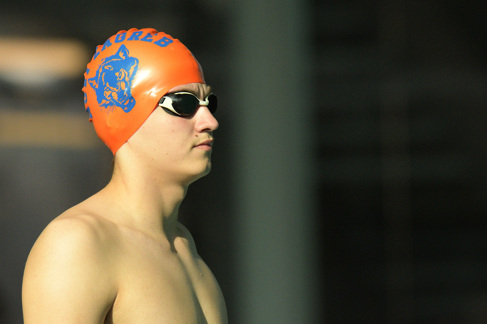

Daklem, dana 21. studenog 2000, Gradski ured za opću upravu napisao je Rješenje gdje piše (citirano):
"... 1. Odobrava se upis udruge pod nazivom Klub za daljinsko plivanje "ZG", sa sjedištem u Zagrebu, Ružmarinka 23,
u Registar udruga Grada Zagreba. Upis u registar udruga Grada Zagreba izvršen je pod registarskim brojem 21001906, 21. studenog 2000.
godine, kojim danom udruga stječe svojstvo pravne osobe pa tim danom može početi s radom kao udruga.
2. Klub za daljinsko plivanje "ZG", sa sjedištem u Zagrebu, Ružmarinka 23, djeluje na području Grada Zagreba,
a osnovni sadržaj djelatnosti udruge je: organiziranje tjelesnog odgoja djece i mladeži u plivačkom športu,
planiranje i organiziranje športskih aktivnosti, planiranje i organiziranje natjecanja te druge djelatnosti opisane u članku 8. Statuta. ... " - citat završen.
S obzirom da nam je samo ime govorilo kako nam je daljinsko plivanje (tj. plivački maratoni) fah za koji smo se opredjelili,
tako smo se i uhvatili organizacije plivačkih maratona. S tim u svezi klub potpisuje organizacije brojnih plivačkih maratona
u Zagrebu i RH (Zagreb open, Pirovac, Novi Vinodolski, Biograd, Omišalj, Telašćica),
Jarunskih plivačkih liga (x 7 kola) i niza bazenskih natjecanja (Miting djeda Mraza i baka Mrazica,
Proljetni štoping PK Novi Zagreb, Miting za najmlađe - Miting sv. Patrika).
Naši su veterani prisutni na svim plivačkim maratonima u RH te redoviti sudionici na svjetskim i
europskim veteranskim plivačkim prvenstvima.
Dana 31. svibnja 2002. izvršili smo promjenu imena Kluba, Statuta i dr. tako da se od tog dana klub službeno zove:
PLIVAČKI KLUB ˝NOVI ZAGREB˝
a od 2002. godine smo i punopravni član ZPS-a i HPS-a.
Nakon dovršetka i puštanja u pogon bazena u Utrinama (2004.), konačno su zadovoljeni i osnovni uvjeti
za pokretanje vlastitog programa plivanja čime je naš Klub otvorio novo poglavlje stvaranja te vjerujemo
da sa svojim radom i zadovoljnim članovima i dalje dostojno prezentiratiramo svoj grad kao i do sada.
Danas u Plivačkom klubu Novi Zagreb trenira više od 300 polaznika pod stručnim nazorom 7 trenera na što smo
posebno ponosni.
Dakle, potražite nas, dođite, trenirajte i ... plivajmo zajedno!
S poštovanjem,
Alen Pišpek, predsjednik
swimzg@swimzg.hr
PLIVAČKI KLUB NOVI ZAGREB
10000 Zagreb, Kombolova 4A
OIB - 96996704342
IBAN - HR1623600001101371741
swimzg@swimzg.hr
